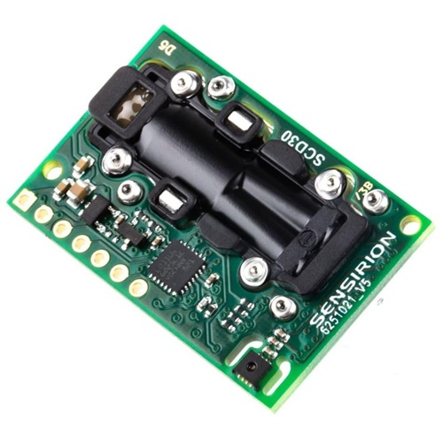

Medidores CO2 Maker
para combatir la pandemia
COVID-19
hablemos sobre ...
AEROSOLES
“... entre el 75% y el 99% de contagios”
a pesar de la negación de la OMS y otras fuentes ...
probado científicamente
CO2
medida indirecta de aire compartido
además... el CO2 ¡es nocivo!
Sensores de CO2
tipos (químicos vs NDIR)
unidades de medida (PPM)
colocación
fabricantes (y precios)
Valores CO2
VENTILA(C)CIÓN!!
Rangos CO2
hasta 700 PPM
entre 700 y 800 PPM
más de 800 PPM
Aparatos de medida
Autofabricación
vs
P. comerciales
manos a la obra!
Sensirion SCD30

elementos
precios
guía de diseño
calibración
PRÁCTICA
- Entorno de desarrollo Arduino IDE
- NodeMCU/ESP-8266 en Arduino IDE
- Bibliotecas Arduino:
- SparkFun SCD30 (sensor CO2)
- Adafruit Neopixel (LED RGB)
- Esquema de conexión
NodeMCU Lolin v3 - ESP8266 pinout
Conexionado
Alimentación
Adaptación de PowerBank basada en esta guía
NOTA: +5V del powerBank → Vin en la NodeMCU y Vcc en el neopixel. VU quedará desconectado.
Carcasa 3D

disponible en el respositorio
Código
/*
* Aparato de medición CO2
*
* WiFi "CO2Sensor" (sin clave)
* http://192.168.4.1
*
*/
#include <ESP8266WiFi.h>
#include <WiFiClient.h>
#include <ESP8266WebServer.h>
// Sensor SDC30
#include <Wire.h>
#include "SparkFun_SCD30_Arduino_Library.h"
SCD30 airSensor;
// Neopixel
#include <Adafruit_NeoPixel.h>
#define PIN D6
#define NUMPIXELS 1
Adafruit_NeoPixel pixels(NUMPIXELS, PIN, NEO_GRB + NEO_KHZ800);
const char *ssid = "CO2Sensor";
ESP8266WebServer server(80);
#define BUZZER D8
int nivelCO2_ideal=700;
int nivelCO2_peligro=800;
uint16_t nivelCO2;
float temperatura, humedad;
long tiempo, tCO2=0, talarma=0;
bool alarma=false;
/*
* Devuelve los valores numéricos en una página HTML
*/
void handleRoot() {
// Respuesta web
char respuesta[250];
sprintf(respuesta, "<html><head><title>Sensor CO2</title><meta http-equiv=\"refresh\" content=\"2\" /></head><body style=\"font-size:200%%;\">Nivel CO2(ppm): %d<br>Temperatura(C): %.1f<br>Humedad(%%): %.1f</body></html>", nivelCO2, temperatura, humedad);
server.send(200, "text/html", respuesta);
} // handleRoot()
void setup() {
pinMode(BUZZER, OUTPUT);
delay(2000); // darle tiempo al sensor
Serial.begin(115200);
Serial.println();
Serial.println("Inicializando medidor CO2 wifi ...");
Wire.begin();
if (airSensor.begin() == false) {
Serial.println("Sensor no detectado: por favor comprueba el conexionado. Sistema detenido.");
while (1);
}
pixels.begin(); // Inicializar NeoPixel
pixels.clear(); // Todos los pixel sin color (= 0,0,0)
pixels.show(); // Mostramos
// arrancamos wifi
WiFi.softAP(ssid);
// indicamos nuestra propia IP por el puerto serie
IPAddress myIP = WiFi.softAPIP();
Serial.print("Entra en http://");
Serial.println(myIP);
// servimos la página web
server.on("/", handleRoot);
server.begin();
Serial.println("Servidor web iniciado");
}
void loop() {
// atendemos las peticiones web
server.handleClient();
// eventos temporizados
tiempo=millis();
// Buzzer (pita una vez cada segundo si estamos en zona roja)
if(alarma==true) {
if ((tiempo-talarma)>1000) talarma=tiempo;
if((tiempo-talarma)<100) digitalWrite(BUZZER, HIGH);
else digitalWrite(BUZZER, LOW);
}
// Medida de CO2
if ((tiempo-tCO2)<2000) return;
tCO2=tiempo;
if (airSensor.dataAvailable()) {
nivelCO2=airSensor.getCO2();
temperatura=airSensor.getTemperature();
humedad=airSensor.getHumidity();
// Los indicamos por el puerto serie también
Serial.print("CO2(ppm): ");
Serial.print(nivelCO2);
Serial.print(" Temperatura(C): ");
Serial.print(temperatura, 1);
Serial.print(" Humedad(%): ");
Serial.println(humedad, 1);
if (nivelCO2<=nivelCO2_ideal) {
pixels.setPixelColor(0, pixels.Color(0, 127, 0)); // Color VERDE
pixels.show();
alarma=false;
digitalWrite(BUZZER, LOW); // por si estaba encendido
}
if (nivelCO2 > nivelCO2_ideal && nivelCO2 < nivelCO2_peligro) {
pixels.setPixelColor(0, pixels.Color(127, 50, 0)); // Color NARANJA
pixels.show();
alarma=false;
digitalWrite(BUZZER, LOW); // por si estaba encendido
}
if (nivelCO2>nivelCO2_peligro) {
pixels.setPixelColor(0, pixels.Color(127, 0, 0)); // Color ROJO
pixels.show();
alarma=true;
}
} else {
Serial.println("Esperando nuevos datos ...");
}
}
disponible en el respositorio
Referencias:
- NodeMCU - Luis Llamas
- Arduino IDE (Entorno de Desarrollo Integrado)
- ESP8266 con el IDE de Arduino - Luis Llamas
- NodeMCU Lolin v3: VU vs Vin y VU and Vin
- Sensirion SCD30 (CO2 NDIR sensor)
- Repositorio del proyecto
- aireamos.org